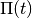
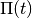
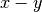
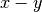

Visualization¶
The post processing step usually splits into two sub-steps. First we compute
additional data and then we visualize these data. The two sub-steps are performed
by individual scripts. All these scripts optionally take the file-name or
file-path of the simulation_results.hdf5 as a further command line argument.
In this section we look at the plotting scripts used to visualize
common aspects of the simulated objects.
Plotting Observables¶
For plotting the usual observables like norm, energy and autocorrelation the following scripts can be used:
PlotNorms.py
PlotEnergies.py
PlotAutocorrelations.py
Plotting Wavepackets¶
Given a Hagedorn wave-packet  we can plot various quantities like the
time evolution of the parameter set . In one and
we can plot various quantities like the
time evolution of the parameter set . In one and  dimensions this is done with:
dimensions this is done with:
PlotWavepacketParameters1D.py
PlotWavepacketParametersDD.py
Further in case of a two dimensional simulation we can plot the trajectories
of  and
and  in the  plane by:
in the  plane by:
PlotWavepacketParametersTrajectory2D.py
For a schematic propagation plot including also the spreads  and
and
 of the packets we can use:
of the packets we can use:
PlotWavepacketParametersSchema2D.py
Plotting the wave-packet coefficients  can be done by several scripts
available which emphasize different aspects. Usually one wants to use one of:
can be done by several scripts
available which emphasize different aspects. Usually one wants to use one of:
PlotWavepacketCoefficients.py
PlotWavepacketCoefficientsStem.py
Especially for higher dimensional wave-packets the other two scripts can give better visualizations:
PlotWavepacketCoefficientsMapEigen.py
PlotWavepacketCoefficientsMap.py
Note
These scripts can easily fail for too long simulations. In case this happens, try to plot less values by dropping some intermediate time-steps.
By evaluating a wave-packet we can also plot contours in case of a two dimensional simulation:
PlotWavepacket2DcontourOTF.py
This script does plot each wave-packet immediately after evaluation and hence is much more efficient than evaluation of all packets first followed by a plot script for wave-functions.
Plotting Wavefunctions¶
Plotting wave-functions is easy. In one dimension we use this script:
PlotWavefunction1D.py
to plot complex valued wave-functions by applying the usual color coding representing the phase. In two dimensions we can either make contour plots or three dimensional surface plots by calling either of:
PlotWavefunction2Dcontour.py
PlotWavefunction2Dsurface.py
Three and higher dimensional wave-functions can not be plotted but the need to do so occurs rarely anyway due to the vast amount of data involved. All plot scripts can set the view-port by command line arguments, for example:
PlotWavefunction1D.py --help
usage: PlotWavefunction1D.py [-h] [-d [DATAFILE]] [-p [PARAMETERSFILE]]
[-b [BLOCKID [BLOCKID ...]]] [-r [RESULTSPATH]]
[-x XRANGE XRANGE] [-y YRANGE YRANGE]
[-t TIMERANGE [TIMERANGE ...]] [--plotphase]
[--plotcomponents] [--plotabssqr]
optional arguments:
-h, --help show this help message and exit
-d [DATAFILE], --datafile [DATAFILE]
The simulation data file
-p [PARAMETERSFILE], --parametersfile [PARAMETERSFILE]
The configuration parameter file
-b [BLOCKID [BLOCKID ...]], --blockid [BLOCKID [BLOCKID ...]]
The data block to handle
-r [RESULTSPATH], --resultspath [RESULTSPATH]
Path where to put the results.
-x XRANGE XRANGE, --xrange XRANGE XRANGE
The plot range on the x-axis
-y YRANGE YRANGE, --yrange YRANGE YRANGE
The plot range on the y-axis
-t TIMERANGE [TIMERANGE ...], --timerange TIMERANGE [TIMERANGE ...]
Plot only timestep(s) in this range
--plotphase Plot the complex phase (slow)
--plotcomponents Plot the real/imaginary parts
--plotabssqr Plot the absolute value squared
Plotting the Potentials¶
One and two dimensional potentials can be plotted by invoking:
PlotPotential1D.py
PlotPotential2D.py